GoHighLevel & CRM Support
Organizing contacts, pipelines, forms, calendars, and basic workflow automation so leads are easier to track and follow up with.
See the ApexScale project →Open to remote work
I’m Trisha Mae Flores, a junior marketing automation specialist and virtual assistant. I help small businesses and agencies keep their leads, CRM, calendars, and content tasks organized and moving.
Your leads. Your systems. In sync.
I studied Hospitality Management and worked as a pastry chef at Baristart from November 2024 to June 2026. Those years taught me how to follow established procedures, keep quality consistent, and stay organized under deadlines. Now I’m applying the same habits to lead management, CRM organization, and administrative support.
I’m early in my career as a virtual assistant, and I build my skills through hands-on practice projects, which you can see below. I learn quickly, and I document what I build so it is easy for others to follow.
Practical support for keeping leads, tools, and day-to-day tasks organized.
Organizing contacts, pipelines, forms, calendars, and basic workflow automation so leads are easier to track and follow up with.
See the ApexScale project →Researching businesses, collecting prospect details, and organizing lead lists so outreach is easier to prepare.
See the research samples →Calendar and appointment coordination, inbox organization, and Google Drive structure to keep daily tasks running smoothly.
See the admin samples →Canva graphics, short-form video edits, content planning in Excel, and post scheduling with Meta Business Suite and Buffer.
See the content samples →Projects and samples I built to learn, practice, and show how I work.
Honest note: everything below is a self-directed practice project or work sample, not paid client work. Names, phone numbers, emails, and other personal details in screenshots are blurred.
A simulated lead qualification funnel for a fictional high-ticket consultancy, built in GoHighLevel from landing page to CRM pipeline.
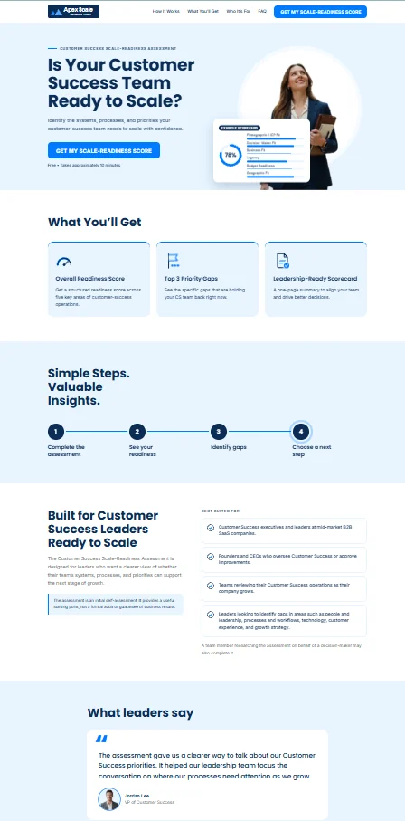
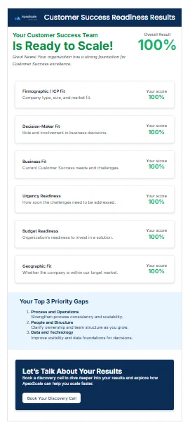
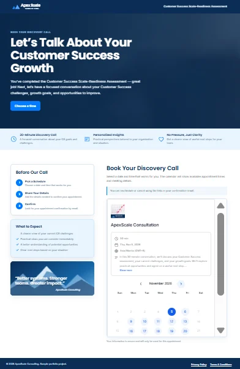
Examples of keeping calendars, scheduling tools, files, and inboxes organized. Select any image to enlarge it.
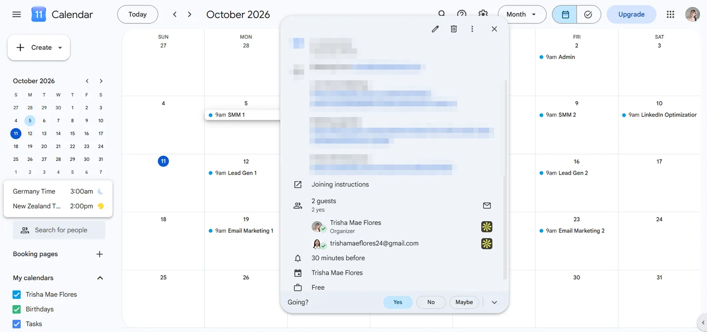
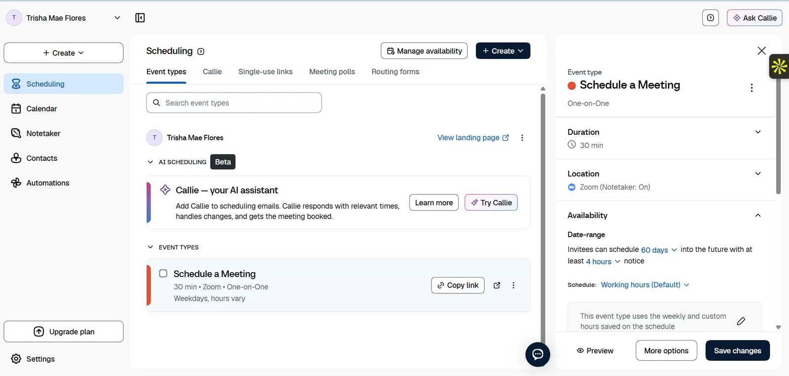
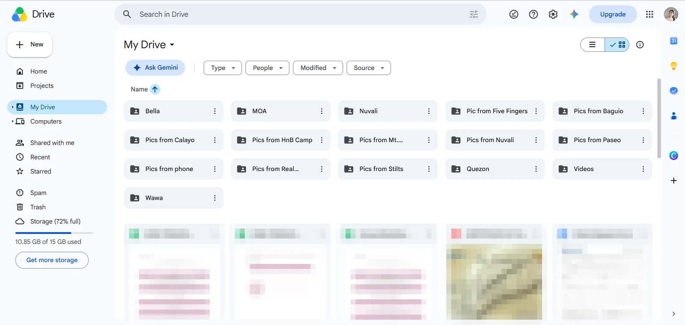
Before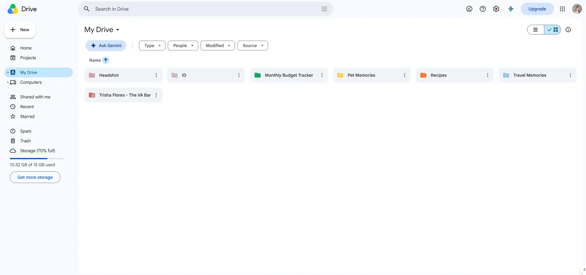
After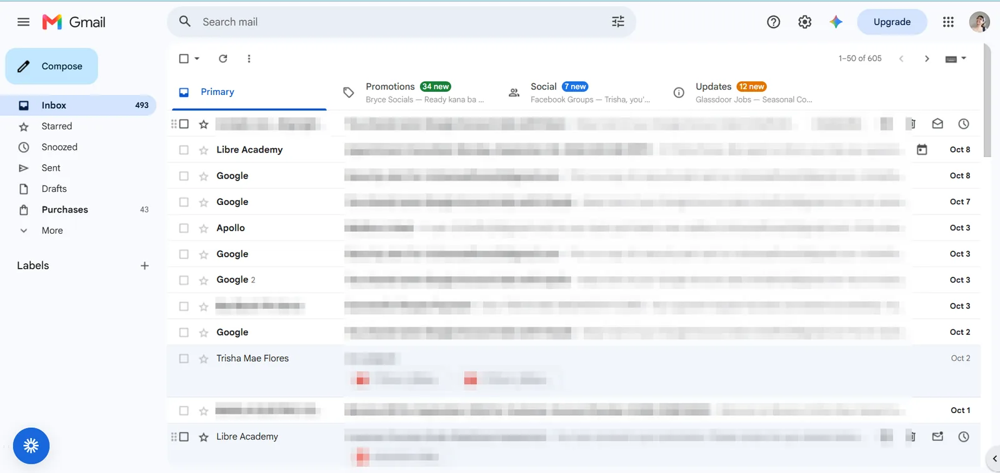
Before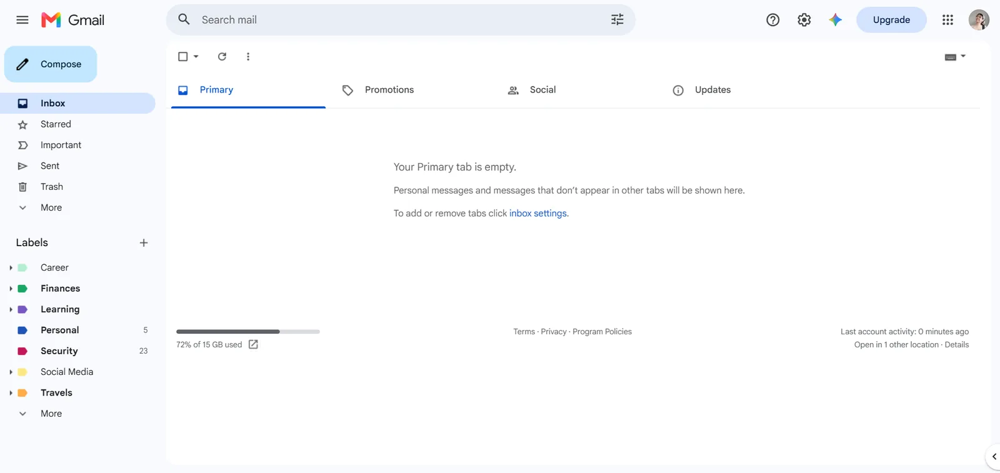
AfterGraphics and short videos made in Canva, plus content planning and scheduling.
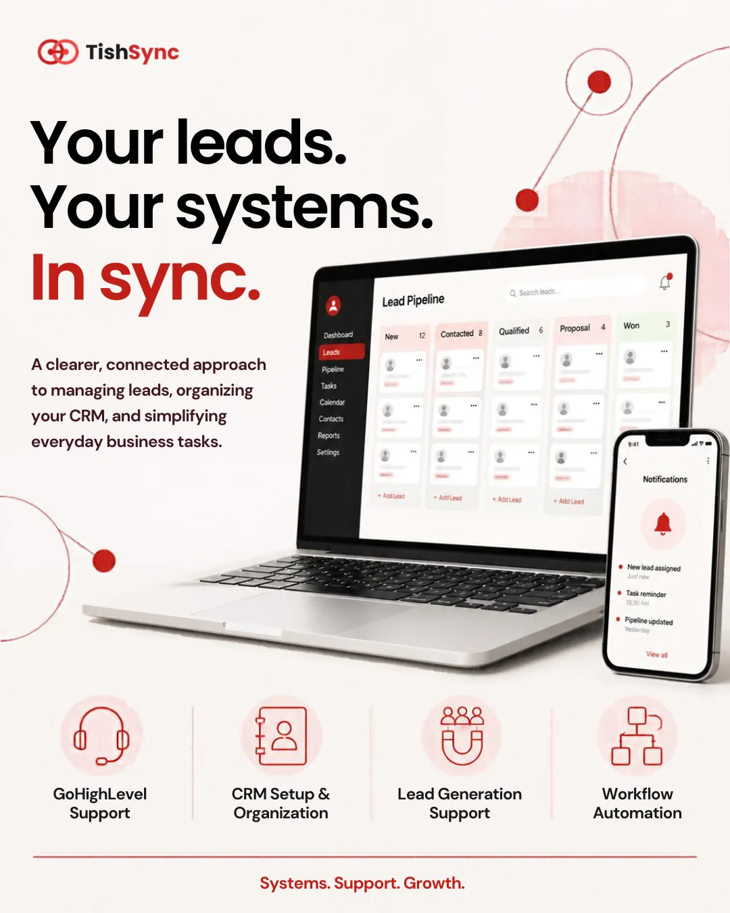
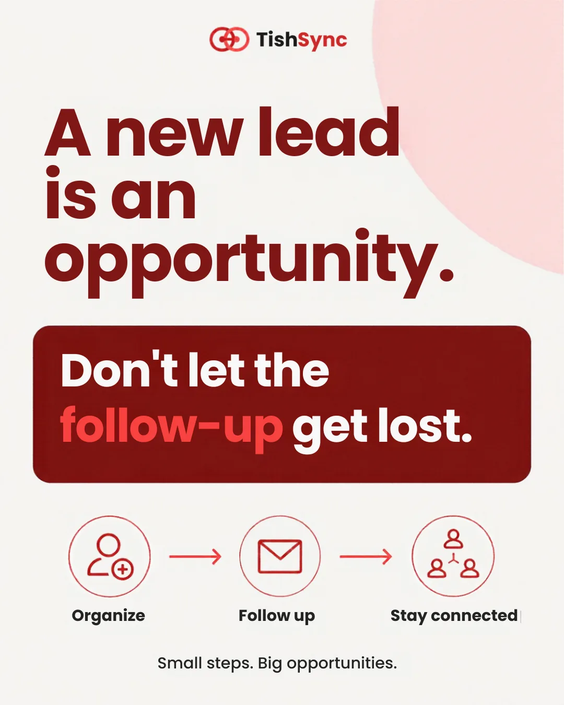
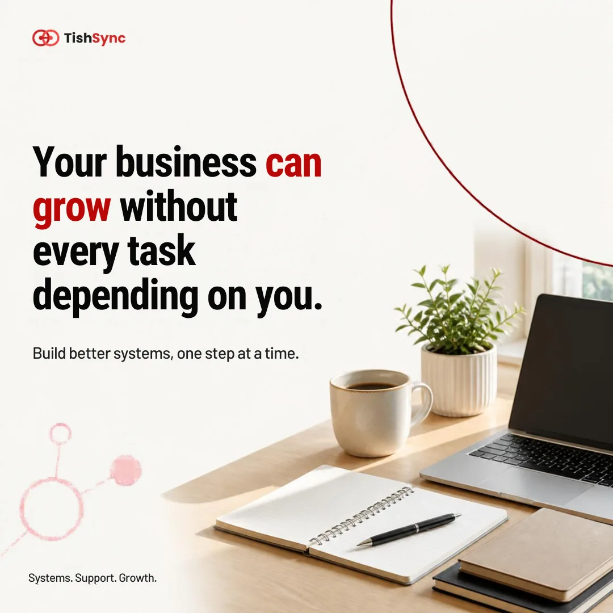
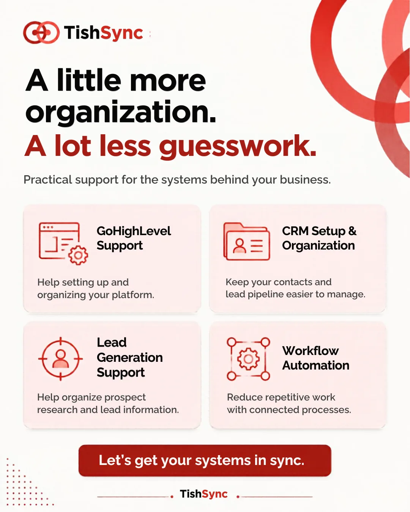
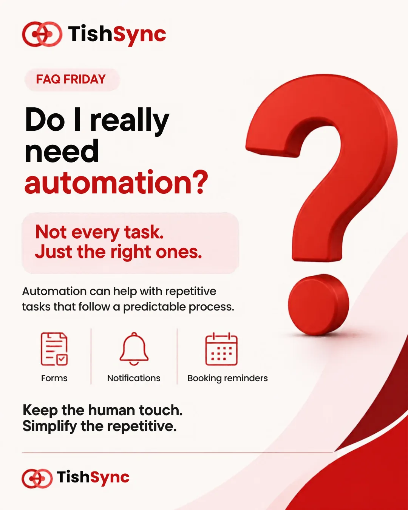
Vertical 9:16 videos made for Reels, TikTok, and Shorts. Select “Full screen” to watch in a portrait viewer.
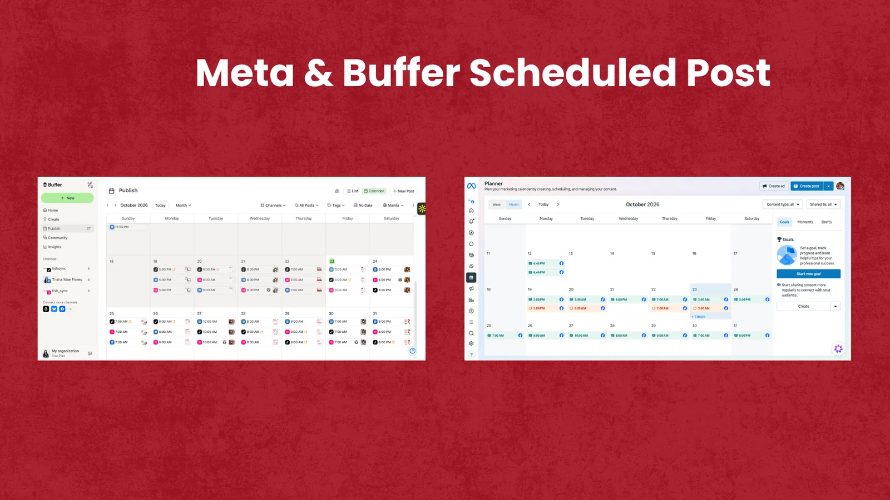
Researching fitness businesses in Australia and organizing the details into a structured lead list. Prospect names, phone numbers, and email addresses are blurred for privacy.
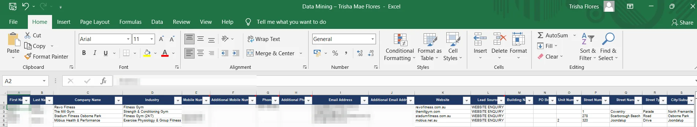
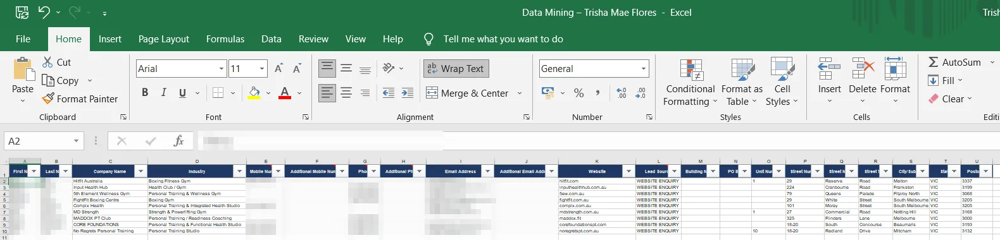
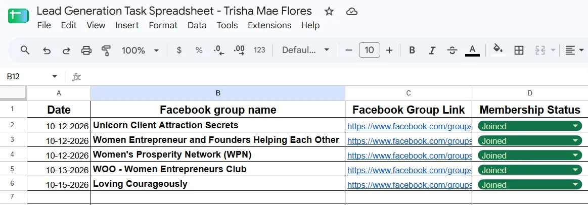
Platforms I’ve used in my practice projects, and what I can do with them.
Funnel organization, forms, calendars, contact management, pipeline setup, workflow automation, and lead qualification.
Business research, prospect data collection, lead list organization, and industry research.
Calendar management, appointment coordination, email organization, and Google Drive organization.
Canva graphic design, short-form video editing, content planning, and social media scheduling.
The habits I bring to every task.
I keep information tidy and double-check the details, from pipeline stages to calendar invites.
I ask when something is unclear and keep updates short and easy to follow.
I map out the steps first and document them, so the work is repeatable and easy to hand over.
I pick up new tools quickly and adjust when priorities change.
Looking for help keeping leads, CRM, and admin tasks organized? Send me an email or message me on LinkedIn.